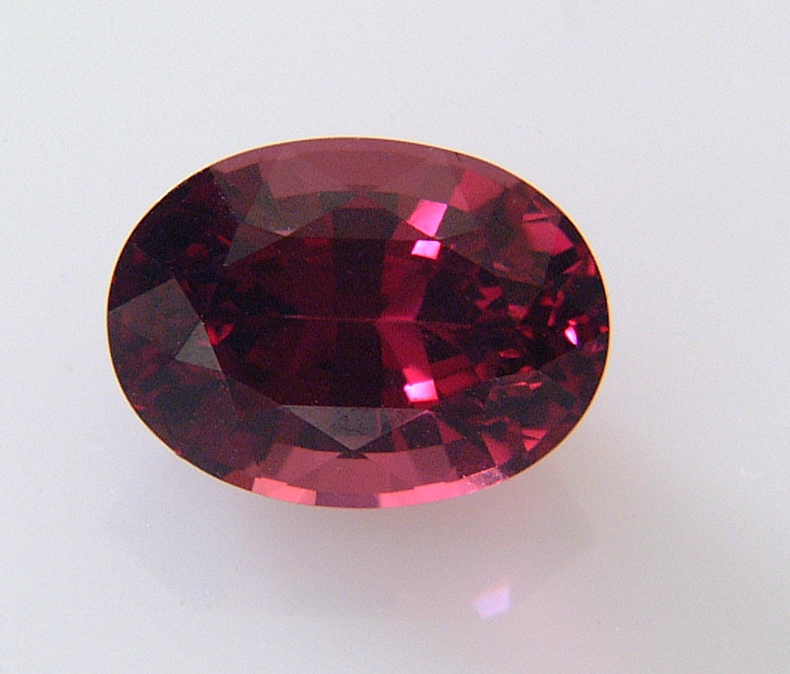

Garnet
Garnet, or Granatus, is a transparent red stone of the Carbuncle family, like the flower of the wild pomegranate. ¹ ² Set in a seal ring with black beneath it, it shines more brightly. It gladdens the heart and dispels sorrow; ¹ some also say it protects its bearer from plague. ²
Generic
Description
Garnet is a transparent red stone belonging to the Carbuncle family. ² Its color resembles wild pomegranate flowers, and it is slightly darker than Carbuncle. ¹ ² In a seal ring with a black backing it appears more brilliant. ¹ It is found chiefly in Ethiopia and sometimes in the sea sands near Tyre. ¹ ²
Properties
Garnet gladdens the heart and dispels sorrow. ¹ It is hot and dry. ¹ Some say it protects its wearer from plague. ²
Variants
| Subtype | Appearance | Found in | Properties |
|---|---|---|---|
| Subtype I: Pomegranate-red Garnet | Dark red, like the pomegranate flower. | Not specified | Not specified. ² |
| Subtype II: Citron-red Garnet | Red with a citron tint, like Hyacinth. | Not specified | Not specified. ² |
| Subtype III: Violet Surian Garnet | Reddish violet; called violaceus and surian. | No distinct locality specified. | More precious than the other kinds. ¹ ² |
Subtype I: Pomegranate-red Garnet
The image shows Garnet.JPG (source).

This kind is dark red like the flower of the pomegranate. ²
Subtype II: Citron-red Garnet

The image shows orange spessartine garnet (source).

This kind is red with a citron tint, resembling Hyacinth in color. ¹ ² It is not itself a kind of Hyacinth.
Subtype III: Violet Surian Garnet

The image shows rhodolite garnet (source).

This reddish-violet kind is called violaceus or surian and is the most precious of the garnets. ¹ ²
Sources
1. St. Albertus Magnus — The Book of Minerals, Tractate II
Granatus (garnet), as Constantine reports Aristotle's statement, is a kind of carbuncle. It is a red, transparent stone, in colour like wild pomegranate flowers. It is slightly darker red than carbuncle, and when it is mounted in a seal ring with black beneath, it is more brilliant. There is also a kind that has a violet colour mingled with the red, and therefore is called violaceus; and this is more precious than other kinds of granatus. It is said to gladden the heart and dispel sorrow; and according to Aristotle it is hot and dry. But as to the statement of some people—that it is a kind of hyacinthus-that is not true. Granatus is found mostly in Ethiopia and sometimes near Tyre in the sea sands.
2. Camillo Leonardi — Speculum Lapidum
Granatus is considered a burning gem of the carbuncle family. There are three species. One is dark red like the pomegranate flower. Another that is red colored with some citron to it, sort of like a jacinth. The third species, called surian, is of a reddish violet color and the most expensive of them all. It is found in Ethiopia among the sands of the sea. Its virtue is that of cheering the heart and chasing sadness away. Some say that it protects the wearer from the plague.
3. Thomas Cantimpre — Liber de natura rerum, Book XIV: “On Precious Stones”, Granatus — Garnet
Garnet is a most beautiful stone, almost resembling ruby in colour, but with a deeper colour like that of a rose. It is exceedingly difficult to engrave. It shines more brightly if a black colour is placed beneath it. It drives away sadness and makes the mind cheerful. It is found in Ethiopia and near Tyre, among the sands cast up by the waves of the sea. There is a variety called violet-coloured, because it has violet mixed with red. This kind is more precious and closely resembles balas.